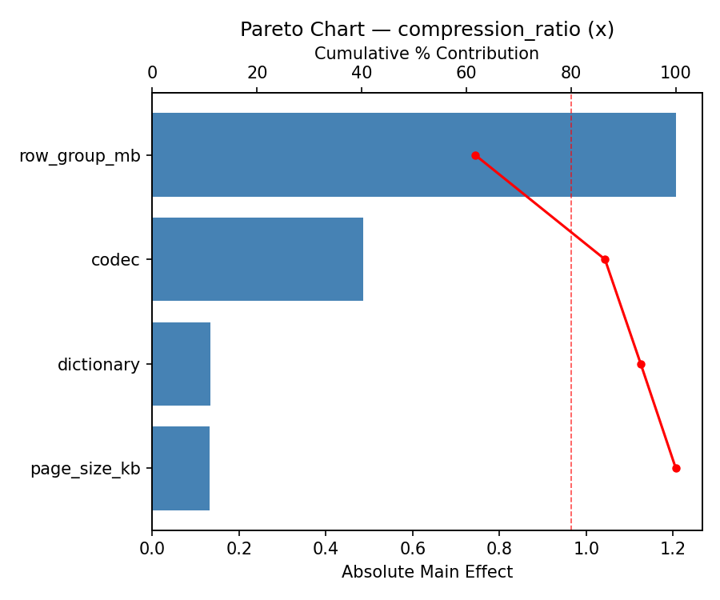
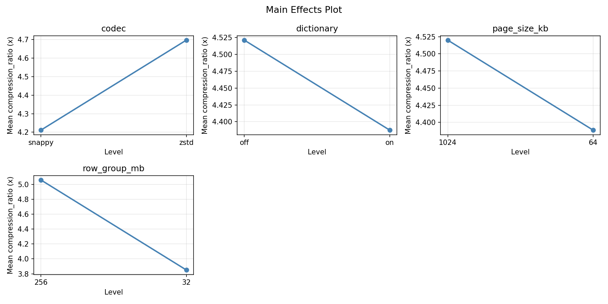
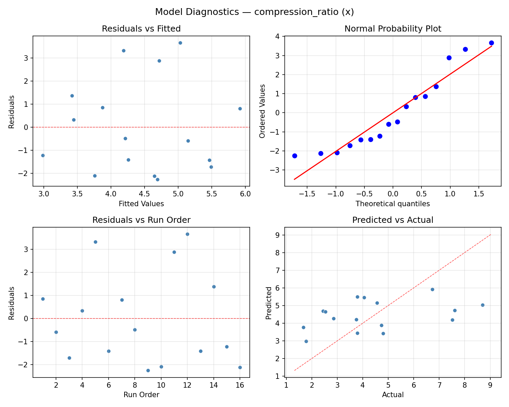
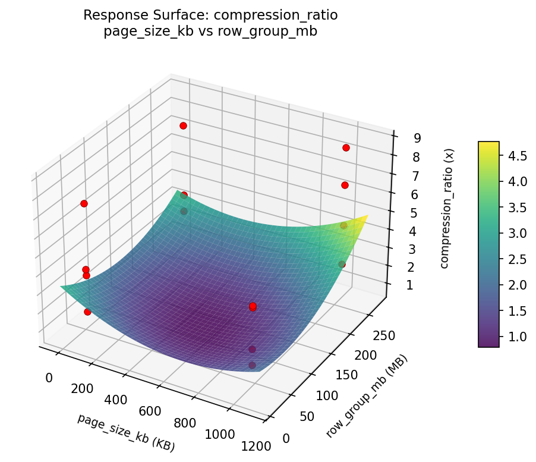

Summary
This experiment investigates columnar compression. Full factorial of compression codec, dictionary encoding, page size, and row group size for ratio vs speed.
The design varies 4 factors: codec, ranging from snappy to zstd, dictionary, ranging from off to on, page size kb (KB), ranging from 64 to 1024, and row group mb (MB), ranging from 32 to 256. The goal is to optimize 2 responses: compression ratio (x) (maximize) and read speed mbps (MB/s) (maximize). Fixed conditions held constant across all runs include format = parquet, data type = mixed_analytics.
A full factorial design was used to explore all 16 possible combinations of the 4 factors at two levels. This guarantees that every main effect and interaction can be estimated independently, at the cost of a larger experiment (16 runs).
Quadratic response surface models were fitted to capture potential curvature and factor interactions. The RSM contour plots below visualize how pairs of factors jointly affect each response.
Key Findings
For compression ratio, the most influential factors were dictionary (42.3%), codec (38.6%), row group mb (13.8%). The best observed value was 8.7 (at codec = snappy, dictionary = on, page size kb = 1024).
For read speed mbps, the most influential factors were dictionary (58.1%), row group mb (28.3%), page size kb (7.3%). The best observed value was 1323.0 (at codec = snappy, dictionary = on, page size kb = 64).
Recommended Next Steps
- Consider whether any fixed factors should be varied in a future study.
Experimental Setup
Factors
| Factor | Low | High | Unit |
|---|
codec | snappy | zstd | |
dictionary | off | on | |
page_size_kb | 64 | 1024 | KB |
row_group_mb | 32 | 256 | MB |
Fixed: format = parquet, data_type = mixed_analytics
Responses
| Response | Direction | Unit |
|---|
compression_ratio | ↑ maximize | x |
read_speed_mbps | ↑ maximize | MB/s |
Configuration
{
"metadata": {
"name": "Columnar Compression",
"description": "Full factorial of compression codec, dictionary encoding, page size, and row group size for ratio vs speed"
},
"factors": [
{
"name": "codec",
"levels": [
"snappy",
"zstd"
],
"type": "categorical",
"unit": ""
},
{
"name": "dictionary",
"levels": [
"off",
"on"
],
"type": "categorical",
"unit": ""
},
{
"name": "page_size_kb",
"levels": [
"64",
"1024"
],
"type": "continuous",
"unit": "KB"
},
{
"name": "row_group_mb",
"levels": [
"32",
"256"
],
"type": "continuous",
"unit": "MB"
}
],
"fixed_factors": {
"format": "parquet",
"data_type": "mixed_analytics"
},
"responses": [
{
"name": "compression_ratio",
"optimize": "maximize",
"unit": "x"
},
{
"name": "read_speed_mbps",
"optimize": "maximize",
"unit": "MB/s"
}
],
"settings": {
"operation": "full_factorial",
"test_script": "use_cases/41_columnar_compression/sim.sh"
}
}
Experimental Matrix
The Full Factorial Design produces 16 runs. Each row is one experiment with specific factor settings.
| Run | codec | dictionary | page_size_kb | row_group_mb |
|---|
| 1 | snappy | on | 1024 | 256 |
| 2 | zstd | off | 64 | 256 |
| 3 | snappy | on | 64 | 256 |
| 4 | snappy | on | 1024 | 32 |
| 5 | zstd | on | 1024 | 32 |
| 6 | zstd | off | 1024 | 32 |
| 7 | zstd | on | 64 | 32 |
| 8 | zstd | off | 64 | 32 |
| 9 | snappy | off | 64 | 256 |
| 10 | snappy | off | 1024 | 32 |
| 11 | zstd | on | 64 | 256 |
| 12 | zstd | on | 1024 | 256 |
| 13 | snappy | on | 64 | 32 |
| 14 | zstd | off | 1024 | 256 |
| 15 | snappy | off | 64 | 32 |
| 16 | snappy | off | 1024 | 256 |
Step-by-Step Workflow
1
Preview the design
$ doe info --config use_cases/41_columnar_compression/config.json
2
Generate the runner script
$ doe generate --config use_cases/41_columnar_compression/config.json \
--output use_cases/41_columnar_compression/results/run.sh --seed 42
3
Execute the experiments
$ bash use_cases/41_columnar_compression/results/run.sh
4
Analyze results
$ doe analyze --config use_cases/41_columnar_compression/config.json
5
Get optimization recommendations
$ doe optimize --config use_cases/41_columnar_compression/config.json
6
Multi-objective optimization
With 2 competing responses, use --multi to find the best compromise via Derringer–Suich desirability.
$ doe optimize --config use_cases/41_columnar_compression/config.json --multi
7
Generate the HTML report
$ doe report --config use_cases/41_columnar_compression/config.json \
--output use_cases/41_columnar_compression/results/report.html
Features Exercised
| Feature | Value |
|---|
| Design type | full_factorial |
| Factor types | continuous (2), categorical (2) |
| Arg style | double-dash |
| Responses | 2 (compression_ratio ↑, read_speed_mbps ↑) |
| Total runs | 16 |
Analysis Results
Generated from actual experiment runs using the DOE Helper Tool.
Response: compression_ratio
Top factors: dictionary (42.3%), codec (38.6%), row_group_mb (13.8%).
ANOVA
| Source | DF | SS | MS | F | p-value |
|---|
| Source | DF | SS | MS | F | p-value |
| codec | 1 | 11.6452 | 11.6452 | 2.171 | 0.2006 |
| dictionary | 1 | 13.9689 | 13.9689 | 2.604 | 0.1675 |
| page_size_kb | 1 | 0.2139 | 0.2139 | 0.040 | 0.8496 |
| row_group_mb | 1 | 1.4823 | 1.4823 | 0.276 | 0.6216 |
| codec*dictionary | 1 | 6.9828 | 6.9828 | 1.302 | 0.3056 |
| codec*page_size_kb | 1 | 4.5689 | 4.5689 | 0.852 | 0.3984 |
| codec*row_group_mb | 1 | 1.9252 | 1.9252 | 0.359 | 0.5752 |
| dictionary*page_size_kb | 1 | 0.3875 | 0.3875 | 0.072 | 0.7988 |
| dictionary*row_group_mb | 1 | 0.9950 | 0.9950 | 0.185 | 0.6846 |
| page_size_kb*row_group_mb | 1 | 0.6202 | 0.6202 | 0.116 | 0.7477 |
| Error | 5 | 26.8216 | 5.3643 | | |
| Total | 15 | 69.6114 | 4.6408 | | |
Pareto Chart

Main Effects Plot

Normal Probability Plot of Effects

Half-Normal Plot of Effects

Model Diagnostics

Response: read_speed_mbps
Top factors: dictionary (58.1%), row_group_mb (28.3%), page_size_kb (7.3%).
ANOVA
| Source | DF | SS | MS | F | p-value |
|---|
| Source | DF | SS | MS | F | p-value |
| codec | 1 | 1105.5625 | 1105.5625 | 0.022 | 0.8871 |
| dictionary | 1 | 96876.5625 | 96876.5625 | 1.957 | 0.2207 |
| page_size_kb | 1 | 1540.5625 | 1540.5625 | 0.031 | 0.8669 |
| row_group_mb | 1 | 23028.0625 | 23028.0625 | 0.465 | 0.5256 |
| codec*dictionary | 1 | 39303.0625 | 39303.0625 | 0.794 | 0.4138 |
| codec*page_size_kb | 1 | 26325.0625 | 26325.0625 | 0.532 | 0.4986 |
| codec*row_group_mb | 1 | 464783.0625 | 464783.0625 | 9.387 | 0.0280 |
| dictionary*page_size_kb | 1 | 28815.0625 | 28815.0625 | 0.582 | 0.4800 |
| dictionary*row_group_mb | 1 | 71422.5625 | 71422.5625 | 1.443 | 0.2835 |
| page_size_kb*row_group_mb | 1 | 41107.5625 | 41107.5625 | 0.830 | 0.4040 |
| Error | 5 | 247557.8125 | 49511.5625 | | |
| Total | 15 | 1041864.9375 | 69457.6625 | | |
Pareto Chart

Main Effects Plot

Normal Probability Plot of Effects

Half-Normal Plot of Effects

Model Diagnostics

Response Surface Plots
3D surfaces fitted with quadratic RSM. Red dots are observed data points.
compression ratio page size kb vs row group mb

read speed mbps page size kb vs row group mb

Multi-Objective Optimization
When responses compete, Derringer–Suich desirability finds the best compromise.
Each response is scaled to a 0–1 desirability, then combined via a weighted geometric mean.
Overall Desirability
D = 0.7010
Per-Response Desirability
| Response | Weight | Desirability | Predicted | Dir |
|---|
compression_ratio |
1.0 |
|
4.73 0.4412 4.73 x |
↑ |
read_speed_mbps |
1.5 |
|
1323.00 0.9545 1323.00 MB/s |
↑ |
Recommended Settings
| Factor | Value |
|---|
codec | zstd |
dictionary | off |
page_size_kb | 64 KB |
row_group_mb | 256 MB |
Source: from observed run #1
Trade-off Summary
Sacrifice = how much worse than single-objective best.
| Response | Predicted | Best Observed | Sacrifice |
|---|
read_speed_mbps | 1323.00 | 1323.00 | +0.00 |
Top 3 Runs by Desirability
| Run | D | Factor Settings |
|---|
| #12 | 0.5858 | codec=zstd, dictionary=on, page_size_kb=64, row_group_mb=32 |
| #3 | 0.5342 | codec=snappy, dictionary=off, page_size_kb=1024, row_group_mb=256 |
Model Quality
| Response | R² | Type |
|---|
read_speed_mbps | 0.1315 | linear |
Full Multi-Objective Output
============================================================
MULTI-OBJECTIVE OPTIMIZATION
Method: Derringer-Suich Desirability Function
============================================================
Overall desirability: D = 0.7010
Response Weight Desirability Predicted Direction
---------------------------------------------------------------------
compression_ratio 1.0 0.4412 4.73 x ↑
read_speed_mbps 1.5 0.9545 1323.00 MB/s ↑
Recommended settings:
codec = zstd
dictionary = off
page_size_kb = 64 KB
row_group_mb = 256 MB
(from observed run #1)
Trade-off summary:
compression_ratio: 4.73 (best observed: 8.70, sacrifice: +3.97)
read_speed_mbps: 1323.00 (best observed: 1323.00, sacrifice: +0.00)
Model quality:
compression_ratio: R² = 0.3839 (linear)
read_speed_mbps: R² = 0.1315 (linear)
Top 3 observed runs by overall desirability:
1. Run #1 (D=0.7010): codec=zstd, dictionary=off, page_size_kb=64, row_group_mb=256
2. Run #12 (D=0.5858): codec=zstd, dictionary=on, page_size_kb=64, row_group_mb=32
3. Run #3 (D=0.5342): codec=snappy, dictionary=off, page_size_kb=1024, row_group_mb=256
Full Analysis Output
=== Main Effects: compression_ratio ===
Factor Effect Std Error % Contribution
--------------------------------------------------------------
dictionary -1.8687 0.5386 42.3%
codec 1.7063 0.5386 38.6%
row_group_mb -0.6087 0.5386 13.8%
page_size_kb 0.2313 0.5386 5.2%
=== ANOVA Table: compression_ratio ===
Source DF SS MS F p-value
-----------------------------------------------------------------------------
codec 1 11.6452 11.6452 2.171 0.2006
dictionary 1 13.9689 13.9689 2.604 0.1675
page_size_kb 1 0.2139 0.2139 0.040 0.8496
row_group_mb 1 1.4823 1.4823 0.276 0.6216
codec*dictionary 1 6.9828 6.9828 1.302 0.3056
codec*page_size_kb 1 4.5689 4.5689 0.852 0.3984
codec*row_group_mb 1 1.9252 1.9252 0.359 0.5752
dictionary*page_size_kb 1 0.3875 0.3875 0.072 0.7988
dictionary*row_group_mb 1 0.9950 0.9950 0.185 0.6846
page_size_kb*row_group_mb 1 0.6202 0.6202 0.116 0.7477
Error 5 26.8216 5.3643
Total 15 69.6114 4.6408
=== Interaction Effects: compression_ratio ===
Factor A Factor B Interaction % Contribution
------------------------------------------------------------------------
codec dictionary -1.3213 30.8%
codec page_size_kb 1.0687 24.9%
codec row_group_mb 0.6937 16.2%
dictionary row_group_mb 0.4988 11.6%
page_size_kb row_group_mb 0.3938 9.2%
dictionary page_size_kb -0.3112 7.3%
=== Summary Statistics: compression_ratio ===
codec:
Level N Mean Std Min Max
------------------------------------------------------------
snappy 8 3.6012 1.7388 1.6700 6.7300
zstd 8 5.3075 2.2929 2.5300 8.7000
dictionary:
Level N Mean Std Min Max
------------------------------------------------------------
off 8 5.3887 2.5996 1.7700 8.7000
on 8 3.5200 1.0914 1.6700 4.8000
page_size_kb:
Level N Mean Std Min Max
------------------------------------------------------------
1024 8 4.3388 1.9090 2.4400 7.5200
64 8 4.5700 2.5039 1.6700 8.7000
row_group_mb:
Level N Mean Std Min Max
------------------------------------------------------------
256 8 4.7588 2.1186 1.6700 8.7000
32 8 4.1500 2.2900 1.7700 7.6100
=== Main Effects: read_speed_mbps ===
Factor Effect Std Error % Contribution
--------------------------------------------------------------
dictionary 155.6250 65.8871 58.1%
row_group_mb 75.8750 65.8871 28.3%
page_size_kb 19.6250 65.8871 7.3%
codec 16.6250 65.8871 6.2%
=== ANOVA Table: read_speed_mbps ===
Source DF SS MS F p-value
-----------------------------------------------------------------------------
codec 1 1105.5625 1105.5625 0.022 0.8871
dictionary 1 96876.5625 96876.5625 1.957 0.2207
page_size_kb 1 1540.5625 1540.5625 0.031 0.8669
row_group_mb 1 23028.0625 23028.0625 0.465 0.5256
codec*dictionary 1 39303.0625 39303.0625 0.794 0.4138
codec*page_size_kb 1 26325.0625 26325.0625 0.532 0.4986
codec*row_group_mb 1 464783.0625 464783.0625 9.387 0.0280
dictionary*page_size_kb 1 28815.0625 28815.0625 0.582 0.4800
dictionary*row_group_mb 1 71422.5625 71422.5625 1.443 0.2835
page_size_kb*row_group_mb 1 41107.5625 41107.5625 0.830 0.4040
Error 5 247557.8125 49511.5625
Total 15 1041864.9375 69457.6625
=== Interaction Effects: read_speed_mbps ===
Factor A Factor B Interaction % Contribution
------------------------------------------------------------------------
codec row_group_mb -340.8750 40.5%
dictionary row_group_mb 133.6250 15.9%
page_size_kb row_group_mb -101.3750 12.1%
codec dictionary -99.1250 11.8%
dictionary page_size_kb 84.8750 10.1%
codec page_size_kb -81.1250 9.6%
=== Summary Statistics: read_speed_mbps ===
codec:
Level N Mean Std Min Max
------------------------------------------------------------
snappy 8 786.6250 295.3182 478.0000 1323.0000
zstd 8 803.2500 247.9255 483.0000 1137.0000
dictionary:
Level N Mean Std Min Max
------------------------------------------------------------
off 8 717.1250 190.1011 531.0000 1077.0000
on 8 872.7500 314.4200 478.0000 1323.0000
page_size_kb:
Level N Mean Std Min Max
------------------------------------------------------------
1024 8 785.1250 254.8660 478.0000 1098.0000
64 8 804.7500 289.2422 483.0000 1323.0000
row_group_mb:
Level N Mean Std Min Max
------------------------------------------------------------
256 8 757.0000 247.3430 478.0000 1137.0000
32 8 832.8750 290.4644 483.0000 1323.0000
Optimization Recommendations
=== Optimization: compression_ratio ===
Direction: maximize
Best observed run: #12
codec = snappy
dictionary = on
page_size_kb = 1024
row_group_mb = 256
Value: 8.7
RSM Model (linear, R² = 0.2908, Adj R² = 0.0329):
Coefficients:
intercept +4.4544
codec -0.6481
dictionary +0.7294
page_size_kb -0.1919
row_group_mb +0.5256
RSM Model (quadratic, R² = 0.7457, Adj R² = -2.8142):
Coefficients:
intercept +0.8909
codec -0.6481
dictionary +0.7294
page_size_kb -0.1919
row_group_mb +0.5256
codec*dictionary +0.5944
codec*page_size_kb -0.8369
codec*row_group_mb -0.3644
dictionary*page_size_kb -0.5244
dictionary*row_group_mb -0.0869
page_size_kb*row_group_mb +0.7144
codec^2 +0.8909
dictionary^2 +0.8909
page_size_kb^2 +0.8909
row_group_mb^2 +0.8909
Curvature analysis:
row_group_mb coef=+0.8909 convex (has a minimum)
page_size_kb coef=+0.8909 convex (has a minimum)
codec coef=+0.8909 convex (has a minimum)
dictionary coef=+0.8909 convex (has a minimum)
Notable interactions:
codec*page_size_kb coef=-0.8369 (antagonistic)
page_size_kb*row_group_mb coef=+0.7144 (synergistic)
codec*dictionary coef=+0.5944 (synergistic)
dictionary*page_size_kb coef=-0.5244 (antagonistic)
codec*row_group_mb coef=-0.3644 (antagonistic)
Predicted optimum (from linear model, at observed points):
codec = snappy
dictionary = on
page_size_kb = 64
row_group_mb = 256
Predicted value: 6.5494
Surface optimum (via L-BFGS-B, linear model):
codec = snappy
dictionary = on
page_size_kb = 64
row_group_mb = 256
Predicted value: 6.5494
Model quality: Weak fit — consider adding center points or using a different design.
Factor importance:
1. dictionary (effect: 1.5, contribution: 34.8%)
2. codec (effect: -1.3, contribution: 30.9%)
3. row_group_mb (effect: -1.1, contribution: 25.1%)
4. page_size_kb (effect: 0.4, contribution: 9.2%)
=== Optimization: read_speed_mbps ===
Direction: maximize
Best observed run: #1
codec = snappy
dictionary = on
page_size_kb = 64
row_group_mb = 32
Value: 1323.0
RSM Model (linear, R² = 0.4807, Adj R² = 0.2918):
Coefficients:
intercept +794.9375
codec -33.4375
dictionary +88.8125
page_size_kb +69.1875
row_group_mb -132.3125
RSM Model (quadratic, R² = 0.6351, Adj R² = -4.4734):
Coefficients:
intercept +158.9875
codec -33.4375
dictionary +88.8125
page_size_kb +69.1875
row_group_mb -132.3125
codec*dictionary -25.8125
codec*page_size_kb +4.0625
codec*row_group_mb +60.3125
dictionary*page_size_kb +64.5625
dictionary*row_group_mb -33.6875
page_size_kb*row_group_mb -20.8125
codec^2 +158.9875
dictionary^2 +158.9875
page_size_kb^2 +158.9875
row_group_mb^2 +158.9875
Curvature analysis:
codec coef=+158.9875 convex (has a minimum)
page_size_kb coef=+158.9875 convex (has a minimum)
dictionary coef=+158.9875 convex (has a minimum)
row_group_mb coef=+158.9875 convex (has a minimum)
Notable interactions:
dictionary*page_size_kb coef=+64.5625 (synergistic)
codec*row_group_mb coef=+60.3125 (synergistic)
dictionary*row_group_mb coef=-33.6875 (antagonistic)
codec*dictionary coef=-25.8125 (antagonistic)
page_size_kb*row_group_mb coef=-20.8125 (antagonistic)
codec*page_size_kb coef=+4.0625 (synergistic)
Predicted optimum (from linear model, at observed points):
codec = snappy
dictionary = on
page_size_kb = 1024
row_group_mb = 32
Predicted value: 1118.6875
Surface optimum (via L-BFGS-B, linear model):
codec = snappy
dictionary = on
page_size_kb = 1024
row_group_mb = 32
Predicted value: 1118.6875
Model quality: Weak fit — consider adding center points or using a different design.
Factor importance:
1. row_group_mb (effect: 264.6, contribution: 40.9%)
2. dictionary (effect: 177.6, contribution: 27.4%)
3. page_size_kb (effect: -138.4, contribution: 21.4%)
4. codec (effect: -66.9, contribution: 10.3%)